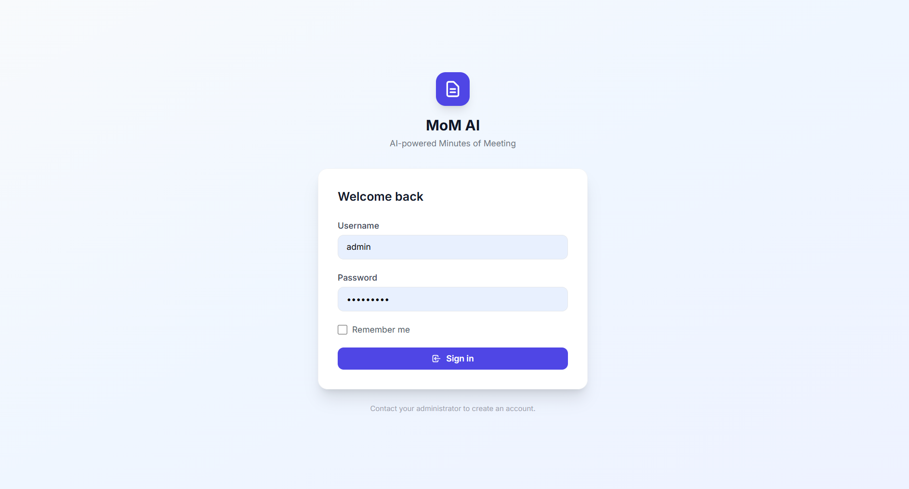
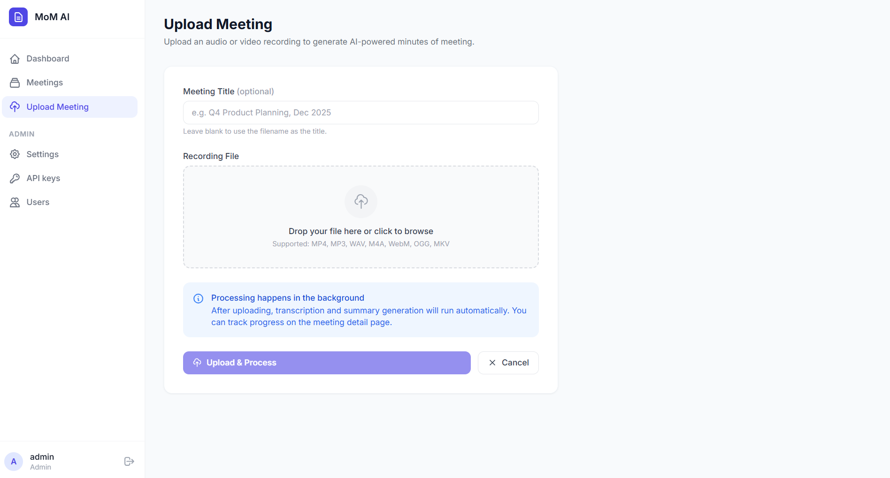
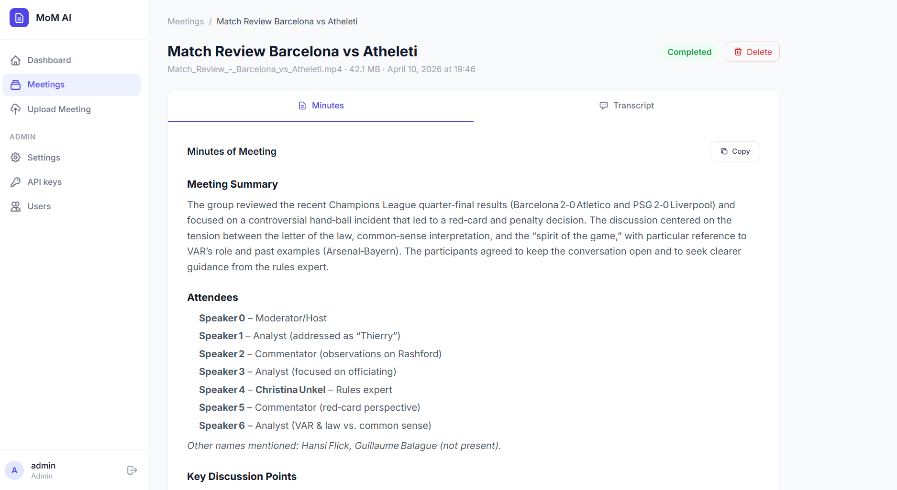

MoM AI
Project Overview
MoM AI is a web application that automates the process of turning meeting recordings into structured minutes. You upload an audio or video file, the system transcribes it using a speech provider of your choice (Deepgram, AssemblyAI, Sarvam AI, or ElevenLabs), and then sends the transcript to an LLM to generate organized Minutes of Meeting.

The output includes a meeting summary, key discussion points, decisions made, action items, and next steps. Everything is presented in a clean, readable format inside the browser. The app handles the entire pipeline in the background, so you can upload a recording and come back when it is done.
Why I Built This
After attending several team meetings, I noticed that writing minutes manually was repetitive, time-consuming, and often inconsistent. Notes were scattered, key decisions got missed, and action items were forgotten.
I built this as a side project to solve that problem for myself first. It was also a good opportunity to learn how to integrate multiple AI APIs into a single pipeline, work with background task processing, and understand how different speech-to-text providers handle real-world audio.
The project is open source because I believe the pattern of combining speech-to-text with LLM summarization is useful for many developers. Sharing the full implementation felt more valuable than keeping it private.
The Problem
Writing meeting minutes manually has a few common issues:
- It takes time to re-listen to recordings and extract key points.
- Different people format notes differently, making them hard to follow.
- Important decisions and action items often get lost or left vague.
- For longer meetings, the effort needed to summarize grows quickly.
MoM AI reduces this work to a single upload. The output follows a consistent structure every time: summary, attendees, discussion points, decisions, action items, and next steps. This makes it easier to review meetings, track responsibilities, and share outcomes with the team.
Key Features
Multi-Provider Transcription
Supports Deepgram, AssemblyAI, Sarvam AI, and ElevenLabs with speaker diarization
LLM Summarization
Works with any OpenAI-compatible API - OpenAI, Groq, OpenRouter, Ollama, and others
Background Processing
Celery + Redis for async processing - upload and come back when it is done
Docker-Ready Deployment
Full stack runs with a single docker compose up command
- Admin settings panel to configure LLM provider, speech provider, API keys, and file retention policy from the UI
- Automatic file cleanup that deletes meeting recordings after a configurable number of days
- Role-based access with admin and user roles
- Wide format support for MP4, MP3, WAV, M4A, WebM, OGG, and MKV files
How It Works
The processing flow has four clear steps:
- Upload - The user uploads a meeting recording through the web interface. The file is saved to the server and a background job is queued.
-
Audio Conversion - The Celery worker picks up the job and uses
ffmpegto convert the uploaded file into a 16 kHz mono WAV file. This standardized format works reliably across all speech providers. - Transcription - The WAV file is sent to the configured speech-to-text provider. The transcript comes back with speaker labels (e.g., Speaker 0, Speaker 1) when diarization is available.
- Summarization - The full transcript is sent to the configured LLM with a structured prompt asking for a summary, discussion points, decisions, action items, and next steps. The LLM returns Markdown, which is then rendered as HTML and stored in the database.
The user interface polls the backend for progress updates and displays the final transcript and minutes once processing is complete.
Screenshots
Login

Upload Page

Meetings Dashboard
Meeting Outcomes

Tech Stack
Backend
Task Queue & Storage
AI & Speech
Frontend & Deployment
Core Logic: How the Code Works
This section shows the key parts of the implementation. The full source is on GitHub.
Processing Pipeline (Celery Task)
This is the main task that ties everything together. It converts the audio, transcribes it, sends the transcript to the LLM, and stores the result.
@celery.task(bind=True, name="app.tasks.process.process_meeting", max_retries=2)
def process_meeting(self, meeting_id: int) -> dict:
meeting = db.session.get(Meeting, meeting_id)
wav_path = None
def _update(status, progress, **kwargs):
meeting.status = status
meeting.progress = progress
for k, v in kwargs.items():
setattr(meeting, k, v)
db.session.commit()
try:
upload_folder = current_app.config["UPLOAD_FOLDER"]
audio_path = os.path.join(upload_folder, meeting.stored_filename)
_update("processing", 10)
wav_path = convert_to_wav(audio_path, output_dir=tempfile.mkdtemp())
_update("transcribing", 35)
speech_provider = get_speech_provider()
transcript = speech_provider.transcribe_file(wav_path)
_update("summarizing", 70)
llm = get_llm_client()
minutes_md = llm.generate_minutes(transcript)
minutes_html = md_lib.markdown(minutes_md, extensions=["tables", "nl2br"])
_update("completed", 100, transcript=transcript, minutes_of_meeting=minutes_html)
return {"meeting_id": meeting_id, "status": "completed"}
except Exception as exc:
_update("failed", 0, error_message=str(exc))
raise
finally:
if wav_path and os.path.exists(wav_path):
os.remove(wav_path)LLM Summarization Prompt
The LLM receives a structured system prompt that guides it to produce consistent, well-organized minutes every time.
def generate_minutes(self, transcript: str) -> str:
system_prompt = (
"You are an expert meeting analyst. Given a meeting transcript, "
"produce well-structured **Minutes of Meeting** in Markdown with:\n\n"
"## Meeting Summary\n"
"A concise 2-4 sentence overview.\n\n"
"## Attendees\n"
"Names/roles mentioned (or 'Not specified').\n\n"
"## Key Discussion Points\n"
"Bullet list of main topics discussed.\n\n"
"## Decisions Made\n"
"Numbered list of decisions reached.\n\n"
"## Action Items\n"
"Table with columns: | Task | Owner | Due Date |\n\n"
"## Next Steps\n"
"What happens after this meeting.\n\n"
"Be concise, professional, and accurate. "
"Use only information from the transcript."
)
messages = [
{"role": "system", "content": system_prompt},
{"role": "user", "content": f"Transcript:\n\n{transcript}"},
]
return self.complete(messages)Speech Provider Factory
Providers are swappable at runtime. The admin picks a provider from the settings panel, and this factory returns the correct implementation.
def get_speech_provider() -> BaseSpeechProvider:
provider_name = SystemConfig.get("speech_provider", "deepgram").lower()
if provider_name == "deepgram":
from app.providers.speech.deepgram_provider import DeepgramProvider
return DeepgramProvider(api_key=SystemConfig.get("deepgram_api_key", ""))
elif provider_name == "assemblyai":
from app.providers.speech.assemblyai_provider import AssemblyAIProvider
return AssemblyAIProvider(api_key=SystemConfig.get("assemblyai_api_key", ""))
elif provider_name == "sarvam":
from app.providers.speech.sarvam_provider import SarvamProvider
return SarvamProvider(api_key=SystemConfig.get("sarvam_api_key", ""))
elif provider_name == "elevenlabs":
from app.providers.speech.elevenlabs_provider import ElevenLabsProvider
return ElevenLabsProvider(api_key=SystemConfig.get("elevenlabs_api_key", ""))Audio Conversion
All uploaded files are normalized to 16 kHz mono WAV before being sent to any speech provider. This keeps the transcription step consistent regardless of the input format.
def convert_to_wav(input_path: str, output_dir: str = None) -> str:
output_dir = output_dir or tempfile.gettempdir()
os.makedirs(output_dir, exist_ok=True)
base_name = os.path.splitext(os.path.basename(input_path))[0]
output_path = os.path.join(output_dir, f"{base_name}_converted.wav")
cmd = [
"ffmpeg", "-y",
"-i", input_path,
"-ar", "16000",
"-ac", "1",
"-vn",
output_path,
]
result = subprocess.run(cmd, stdout=subprocess.PIPE,
stderr=subprocess.PIPE, timeout=600)
if result.returncode != 0:
raise RuntimeError(f"ffmpeg conversion failed:\n{result.stderr.decode()}")
return output_pathMy Contribution
I designed and built this project end to end.
- Architected the full pipeline from file upload to final minutes output
- Built the Flask backend with blueprints, SQLAlchemy models, and Jinja2 templates
- Integrated four different speech-to-text providers (Deepgram, AssemblyAI, Sarvam AI, ElevenLabs) behind a common interface using the factory pattern
- Wrote the LLM integration layer using the OpenAI SDK, making it compatible with any OpenAI-compatible endpoint (OpenAI, Groq, OpenRouter, Ollama, and others)
- Set up Celery with Redis for background processing and periodic cleanup tasks
- Built the admin panel for managing providers, API keys, and system settings at runtime
- Designed the UI with a clean, responsive layout
- Dockerized the entire stack (Flask, Celery worker, Celery beat, Redis) for one-command deployment
Challenges & Learnings
Handling different speech provider APIs and output formats
Each provider returns transcripts in a different structure. Some give word-level timestamps, others give
utterances, and speaker labels vary across providers. I had to normalize these outputs into a consistent
format that the LLM could work with reliably. This taught me the importance of building a clean abstraction
layer when dealing with multiple external APIs.
Managing long-running tasks without blocking the web server
Audio files can be large, and transcription plus summarization can take minutes. I set up Celery with Redis
to handle this asynchronously. Getting the progress tracking right (so the UI could show real-time status
updates via polling) required careful state management on the database side.
Prompt engineering for consistent LLM output
Early versions of the summarization prompt produced inconsistent results. Sometimes the LLM would skip
sections, use different headings, or add unnecessary commentary. Iterating on the system prompt to get a
reliable, structured output taught me that small wording changes in prompts can significantly affect the
quality and consistency of the result.
Audio format normalization across different input types
Users upload files in all sorts of formats (MP4, WebM, M4A, OGG). Not all speech providers handle all
formats well. Converting everything to a standardized 16 kHz mono WAV using ffmpeg before transcription
solved compatibility issues across all providers.
Installation & Setup
# Clone the repository
git clone https://github.com/inboxpraveen/LLM-Minutes-of-Meeting.git
cd LLM-Minutes-of-Meeting
# Start the full stack (Flask, Celery worker, Celery beat, Redis)
docker compose upOnce running, open the web interface in your browser. Configure your speech provider and LLM settings from the admin panel, then upload a meeting recording to get started.
Future Improvements
- Real-time meeting transcription by integrating with a live audio stream instead of only uploaded files
- Multi-language support with automatic language detection before transcription
- Email or Slack integration to automatically send the generated minutes to meeting participants
- Side-by-side transcript and minutes view so users can verify the minutes against the original transcript
- Export options for PDF, DOCX, and plain text formats
- Meeting analytics to track trends like frequently discussed topics and recurring action items
Closing Note
MoM AI is open source and built to be useful. Whether you want to automate your own meeting notes, learn how to integrate speech-to-text and LLM APIs, or just explore the codebase for ideas, you are welcome to use, fork, or improve it.
If you find it helpful or have suggestions, feel free to open an issue or contribute on GitHub.